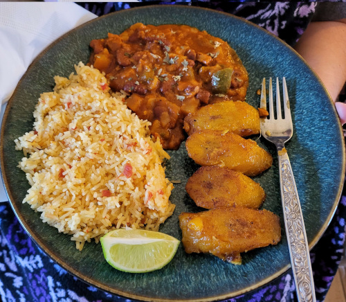

Puerto Rican Rice and Beans Meal Prep
Return Home

Description
This is a meal prep recipe for making Puerto Rican
style red kidney beans and rice, but loaded with
vegan sausage, potatoes, onions and peppers in tomato sauce.
It makes 7-8 servings and is great for lunches
throughout the week. I make the mojo before hand
by chopping and blending garlic with olive
and I freeze the sofrito in ice cube trays.
You can add or substitute or omit anything you want.
Small red peppers or different flavored sausage.
I like to add olives and season additionally with any
combination of pepper, paprika, chili powder, cayenne pepper
and ground veggie seasoning. Oregano makes a huge difference.
Be careful not to make it too spicy.
This is essentially a kind of chili or stew served over rice.
You can add salsa and yellow food coloring to the rice
to make it mexican style, and serve with slices of lime, maduros
or tostones on the side.
Ingredients
- 2 Field Roast Smoked Apple & Sage Plant-Based Sausages
- 1 spoonful of "mojo" (blend of garlic and olive oil)
- 2 cubes of sofrito
- 1 potato
- 1 green bell pepper
- 1 yellow onion
- 2 15.5 oz cans of Goya red kidney beans
- 2 8 oz cans of Goya spanish style tomato sauce
- 2 1/2 cups of jasmine rice
- 2 packets of Goya Sazon
- 2 bay leaves
Steps
- Prepare a large copper pot and set to medium low heat.
toss in mojo and sofrito and stir. Let the sofrito
melt if it was frozen
- Start chopping the sausage, add to the pot and stir
-
Wash and scrub the potato. Peeling is optional. Cut the potato
to your desired size, just be aware the large the chunks
the longer it will take to get soft. Add to the pot and stir.
-
Chop the onion, add to the pot and stir.
See Dicing an Onion by Chef Jean Pierre
-
Dice the green pepper, remember to cut the top and remove the seeds.
You can substitute for any kind of pepper. Add to the pot and stir.
-
Open the cans of tomato sauce and add to the pot,
add the same amount of water to the pot (you can use the cans).
-
Wash the beans in a strainer and add to the pot and stir. Add this point
add any seasoning you like, don't forget the Sazon and bay leaves.
-
Turn the heat up. Not too high, just until you start to see bubbles reach the surface.
Then cover the pot and turn the heat down to a simmer. Let simmer for at last 1 1/2 to 2 hours
or until potatoes are soft. You don't want crunchy potatoes.
-
When the beans have 30 minutes left to simmer, start the rice. Spray down the
bottom of your instapot with olive oil, wash the rice in a rice strainer
and add the rice to the instapot with an equal amount (2 1/2 cups) of water.
Set the instapot to the "rice" setting.
-
When the rice has a few minutes left start frying the maduros
in a small pan of vegetable oil
-
Serve the beans next to the rice (don't dirty the rice!
It's all about presentation) and sprinkle parsley flakes.
Return Home